A-20-10-01B-10-20
指図を登録すれば、
工程ごとの作業指示が並ぶ
製造指図を承認して工程展開すると、品目に登録した工順どおりに作業指示が作られ、産出ロットも自動で採番されます。状態は色で見分けられ、勝手に飛び越すことはできません。
未承認→承認済→展開済→完了
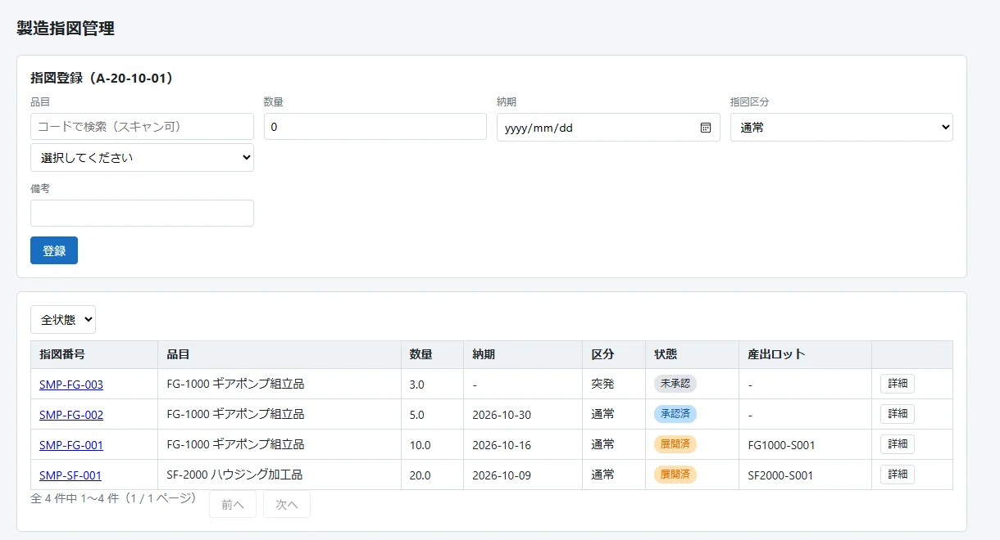
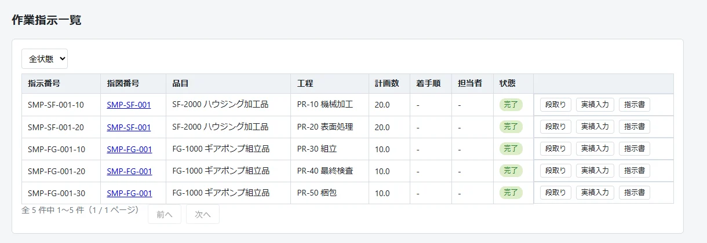
Parallel Factory MES は、工場の製造実績をブラウザで記録・追跡するオープンソースのMESです。指図・作業・在庫・検査・出荷を一本の流れとして扱い、どの部材ロットからどの製品ロットができたかを、いつでも両方向にたどれます。
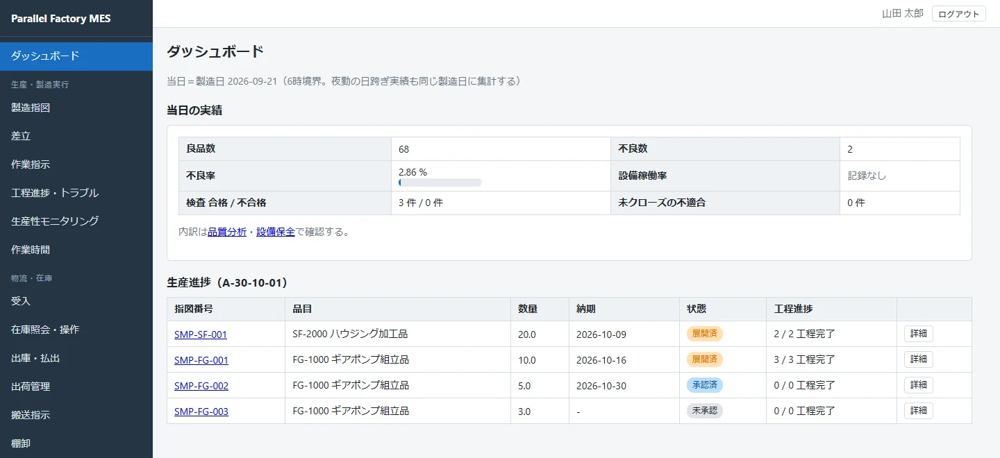
部署ごとに別々の表で管理していた記録を、同じロット番号でつなぎます。前の工程が終わっていなければ次へ進めない、検査が通っていなければ出荷できない――そうした業務の順番をシステムが守ります。
製造指図を承認して工程展開すると、品目に登録した工順どおりに作業指示が作られ、産出ロットも自動で採番されます。状態は色で見分けられ、勝手に飛び越すことはできません。


作業指示書にはその工程で使う部品と必要数、記録欄、バーコードが入ります。ロットごとの現品票も発行でき、PDFに書き出せます。
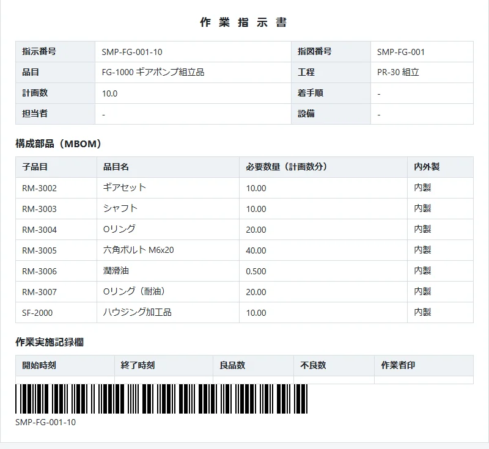
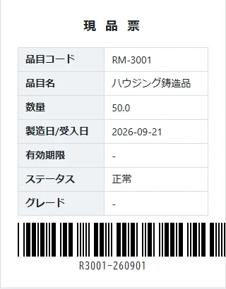
製品ロットの番号を読み取るだけで、使われた半製品・部材のロットを最後までたどれます（トレースバック）。逆に、ある部材ロットが使われた製品を洗い出すこともできます（トレースフォワード）。
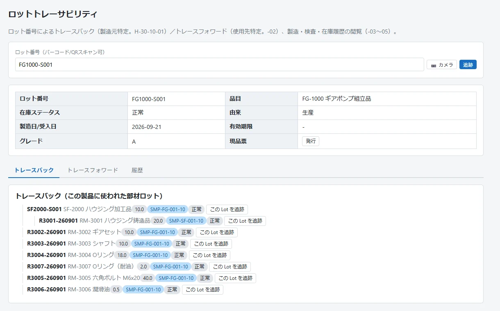
受入・製造・出荷のたびに在庫が動き、入出庫の履歴が残ります。ロケーション移動、数量調整、分割・統合、保留や廃棄といった操作も、理由とともに記録されます。
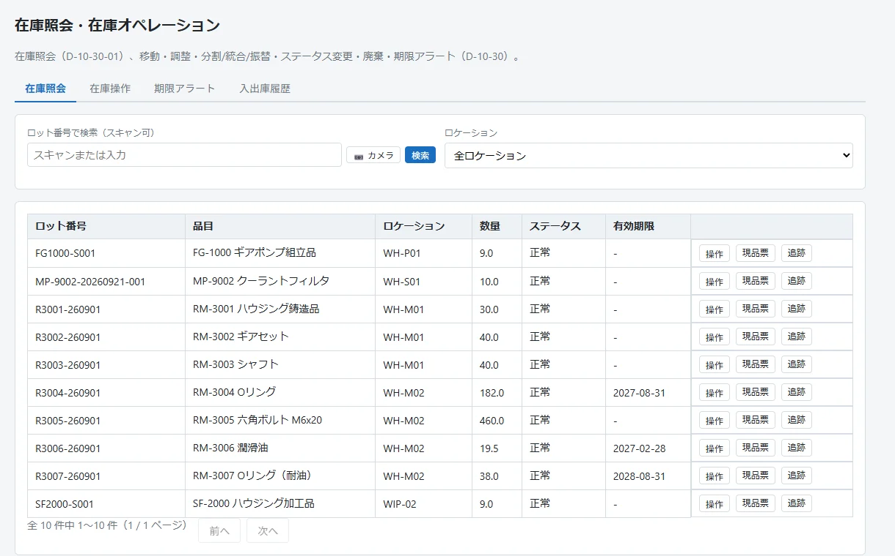
直行率・歩留まり・不良率を、品目別・工程別・直別に集計します。夜勤が日付をまたいでも、境界時刻（既定は朝6時）までの実績は同じ製造日にまとまります。
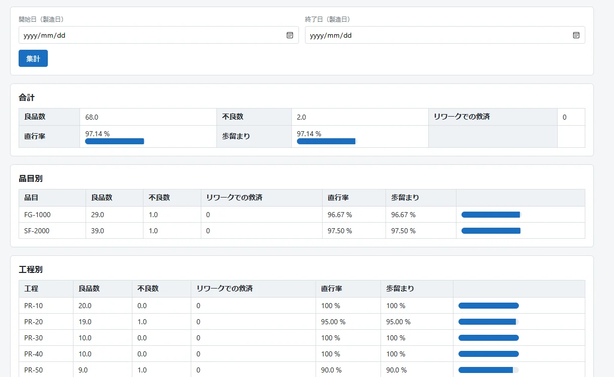
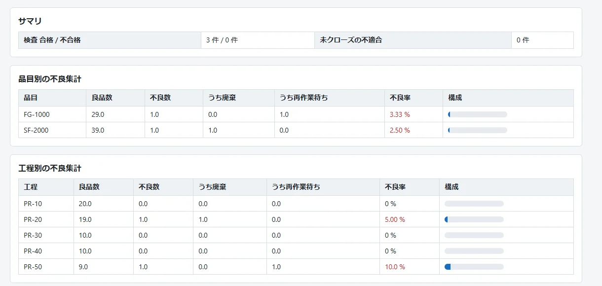
実績の訂正、検査結果の訂正、マスタの変更、在庫操作、取消。記録を変える操作はすべて監査ログに残り、訂正なら変更前と変更後も保存されます。
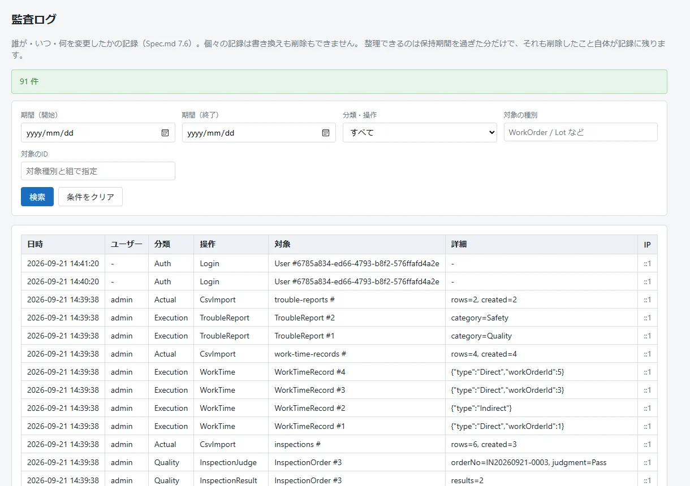
品目・工順・設備・検査項目などのマスタは、CSVで一括登録・出力できます。ZIPにまとめれば一度に取り込めて、1行でもエラーがあれば全件取り消し。先に「検証のみ」で確かめられます。
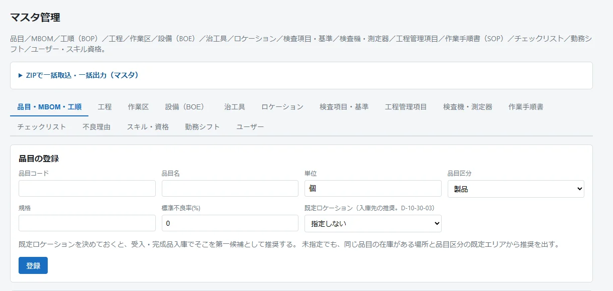
どれも無償で、ライセンス認証もありません。ZIP・Docker・ストア版は .NET のインストールも不要です。
API・データベース・画面をひとつにまとめた Windows のデスクトップ版です。サーバーもネット接続も要らないので、機能を試したり検証したりするのに向いています。
Microsoft Store で入手 Windows 10（2004 以降）/ 11展開して start.cmd（Linux は sh start.sh）を実行するだけ。ランタイム同梱の自己完結版です。
Releases からダウンロード Windows / Linux（x64）・ポート 5000データはボリュームに残ります。PostgreSQL と一緒に動かすなら compose.postgres.yaml を使います。
docker run -d -p 8080:8080 \ -v mesapp-data:/data \ ghcr.io/msmsrep/parallelfactorymesamd64 / arm64・ポート 8080
上のどれかで起動し、ブラウザで http://localhost:5000（Docker は 8080）を開きます。ストア版はアプリの画面がそのまま開きます。データベース（SQLite）は自動で作られます。
最初は初期セットアップの案内が出るので、管理者を作ります。ストア版は管理者が自動で作られ、ユーザー名と初期パスワードが画面の上に表示されます。
ZIP か Docker で1台に置き、現場のPCやタブレットはブラウザで開くだけ。端末へのインストールもライセンス認証も要りません。本番運用はこちらの構成でお使いください。
Microsoft Store のデスクトップ版は、ほかの端末からは接続できません。機能を試したり、手順を検証したりするのに使います。